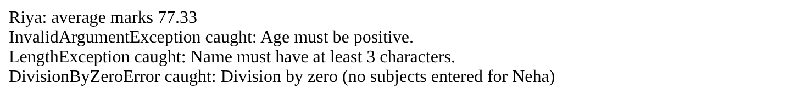

Write a PHP code to handle different types of exceptions using multiple catch blocks.
Program 10.6: Handling Different Exception Types Using Multiple Catch Blocks
Concepts used
InvalidArgumentException, LengthException, DivisionByZeroError, Exception, multiple catch blocks in order from specific to general, throw new.
Test data: The four sets of student details given in Table 10.5, each containing a name, an age, total marks and the number of subjects.
Logic
- Define checkStudent(
$name,$age,$total,$subjects), which throws an InvalidArgumentException for an age that is not positive, a LengthException for a name shorter than three characters, and otherwise calculates the average, which throws a DivisionByZeroError when the number of subjects is zero. - For each set of details, call the function inside a try block.
- Write one catch block for each class, from the specific classes to the general Exception.
Code
<?php// Checks student details and returns the average marksfunction checkStudent($name, $age, $total, $subjects){ if ($age <= 0) { throw new InvalidArgumentException("Age must be positive."); } if (strlen($name) < 3) { throw new LengthException("Name must have at least 3 characters."); } $average = $total / $subjects; // throws DivisionByZeroError if $subjects is 0 return "$name: average marks " . round($average, 2);}?><!DOCTYPE html><html lang="en"><head> <meta charset="UTF-8"> <title>Multiple Catch Blocks</title></head><body> <?php $students = [ ["Riya", 19, 232, 3], ["Aarav", -2, 250, 3], ["Al", 20, 180, 2], ["Neha", 21, 150, 0], ]; foreach ($students as $s) { try { echo checkStudent($s[0], $s[1], $s[2], $s[3]) . "<br>"; } catch (InvalidArgumentException $e) { echo "InvalidArgumentException caught: " . $e->getMessage() . "<br>"; } catch (LengthException $e) { echo "LengthException caught: " . $e->getMessage() . "<br>"; } catch (DivisionByZeroError $e) { echo "DivisionByZeroError caught: " . $e->getMessage() . " (no subjects entered for " . $s[0] . ")<br>"; } catch (Exception $e) { echo "Other exception caught: " . $e->getMessage() . "<br>"; } } ?></body></html>
Output
These are real screenshots, taken by running the program with the test data.

Understanding the output
The first line is the normal result for valid details. Each of the next three lines was produced by a different catch block, selected by the class of the thrown object, so each problem received its own message. The catch (Exception $e) block was not needed for these data, but it ensures that any other exception derived from Exception would still be handled.
Table 10.5: Test Data and Results for Program 10.6
| Name | Age | Total | Subjects | Exception Thrown | Block Executed |
|---|---|---|---|---|---|
| Riya | 19 | 232 | 3 | None | None (average displayed) |
| Aarav | -2 | 250 | 3 | InvalidArgumentException | First |
| Al | 20 | 180 | 2 | LengthException | Second |
| Neha | 21 | 150 | 0 | DivisionByZeroError | Third |
How it works
Throwing different classes: The function checks the age first and then the length of the name, throwing a different class for each problem. If both checks pass, it divides the total by the number of subjects; for zero subjects, PHP itself throws a DivisionByZeroError. For valid details, it returns the name with the rounded average.
Selecting the catch block: For each set of details, PHP compares the class of the thrown object with the catch blocks from the top. The age problem matches the first block, the name problem the second, and the division by zero the third. The final catch (Exception $e) block is kept for any other exception and is placed last, because it would otherwise catch the InvalidArgumentException and LengthException objects, which are derived from Exception. After the matching block, the loop continues with the next student.
Run it yourself
Real PHP 8.3 runs inside your browser (nothing is sent to a server). Forms, links, cookies and sessions work as they do in XAMPP. The first run downloads PHP, so it needs internet and takes a few seconds.
Try this:
- Change Riya’s age to -1, or her name to "Ri".
- Remove the
catch (LengthException $e)block. Which block catches that error now?
Running it in XAMPP
Save the file in C:\xampp\htdocs\phpbook\ch10 and open http://localhost/phpbook/ch10/multiple-catch.php.
Common mistakes
- Writing catch (Exception
$e) before the specific blocks, so that the specific blocks never run. - Expecting catch (Exception
$e) to catch DivisionByZeroError, which is not derived from Exception. - Using multi-catch for exceptions that need different responses.